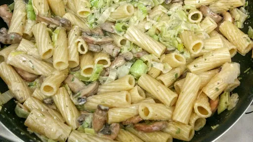

Leek and tarragon rigatoni
25 mins
Serves 4
Vegetarian
Gluten Free

Gluten-free: just use gluten-free pasta.
Ingredients
-
2
mugs rigatoni
-
50
g butter
-
1
tbsp olive oil
-
2
large leeks, chopped
-
250
g chestnut mushrooms
-
1
tsp dried tarragon
-
300
ml single cream
-
1
veg stock cube
-
¼
mug grated parmesan
Instructions
- Put the pasta on to cook. Once cooked, drain and return to the pan, with a drizzle of olive oil, until needed.
- Meanwhile, heat the butter and oil in a wok. Fry the leeks until soft and beginning to broken. Add the mushrooms and fry for a further 2 minutes.
- Add the tarragon, cream, stock and cook for 2 minutes. Season to taste.
- Stir in the pasta and the parmesan.
Nosh: Quick & Easy
Short Link
Long Link